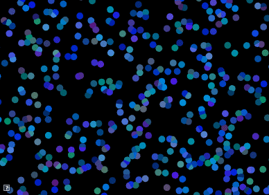

The goals of this lab are to work with
The source is available from github.swarthmore.edu. All your code for this course will be in your AnimationToolkit repository.
> cd cs56/AnimationToolkit > git pull > cd build > cmake ..; make
For those of you without an account yet, you can download the repository from here. You can still use git locally to keep track of your changes. To submit, we will set the url to the remote repository manually (The professor will send you instructions once your account is setup).
> mkdir cs56 > cd cs56 > unzip AnimationToolkit-master-a1.zip > cd AnimationToolkit-master-a1 > git init > git add . > git commit -m "assignment framework"
To run your program from the build directory, type
build> ../bin/a1-eyes
Tip: sin() will smoothly vary between 1 and -1 given smoothly increasing values. Use elapsedTime() (defined in "AFramework.h") as the input to sin().

In class, we talked about how atan2 (tangent) can be used to compute an angle given a point. For this question, you will animate the eyes from Question 1 to follow a target. Your solution should use tangent to compute the position of the pupils.
The target is indicated with a red dot. To move it, click and hold down the left mouse button to drag it to a new location.
Implement your solution in assignments/a1-hello/look.cpp. To run your program from the build directory, type
build> ../bin/a1-look

In class, we talked about how to animate a particle to move in a straight line. In this assignment, we will extend this program to animate *lots* of particles moving in a straight line.
Implement your program in assignments/a1-hello/velocity.cpp To run your program from the build directory, type
build> ../bin/a1-velocity
This program should support the following features
It is up to you how to implement your program. However, some recommendations
Tip: Color Jitter The easiest way to generate a random color is to
sample a random value for each red, green, and blue component. However, in
the example above, we used a different approach called color
jittering. To jitter color, we start with a base color and then add
random deviations from it. For example, if our base color were blue, (0.2,0.8,0.2),
we can jitter its components by adding random values in the range [-0.2,
0.2]. This gives us colors that are close to the original but still has
variety.
In class, we talked about how to animate a particle to move in a circle. In this assignment, we will extend this program to animate particles moving in concentric circles.
Implement your solution in assignments/a1-hello/circles.cpp To run your program from the build directory, type
build> ../bin/a1-circles

This program should support the following
Tip: Color Palettes A color palette is a simple method for generating harmonious colors. In this approach, we define a list of colors to use in our application. When we need a color, we choose it from this list. Above, we used the following palette.
//https://www.color-hex.com/color-palette/82379 std::vectorpallet = { AVector3(0,165,227)/255., AVector3(141,215,191)/255., AVector3(255,150,197)/255., AVector3(255,87,104)/255., AVector3(255,162,58)/255. };
Even with just spheres, it's possible to make an interesting demo!

Create a unique animation effect. For credit, you must submit your code and a video or gif. You can capture a video using recordmydesktop (instructions below) or with Peek.
You can easily create your own programs by copying an existing demo and then editing CMakeLists.txt to build it. See one of the same programs for an example!
Some ideas